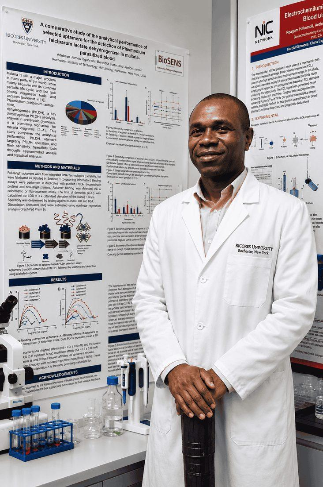
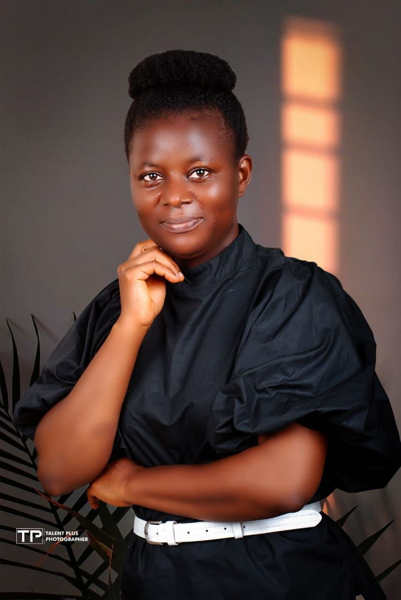
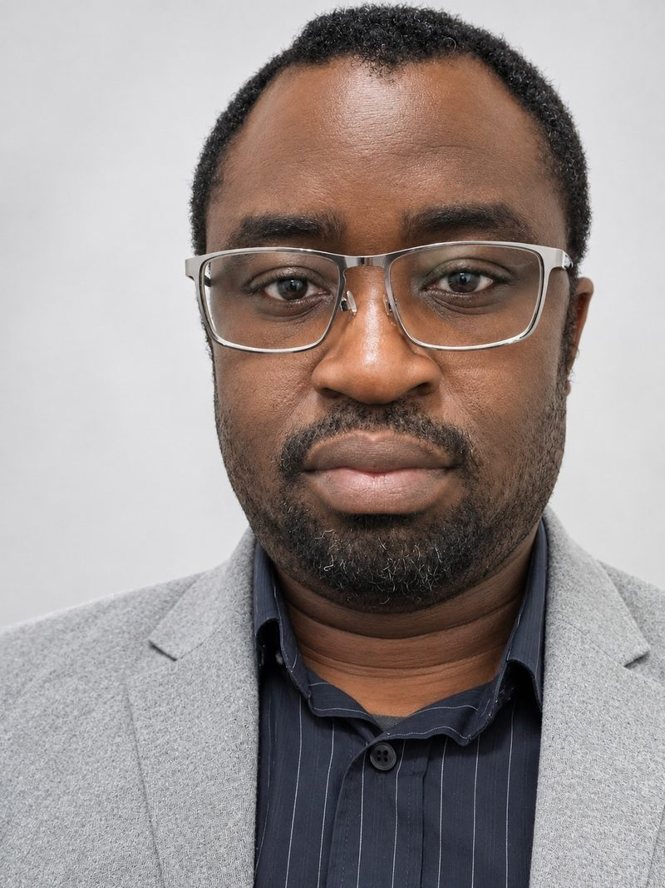

Home / Team
Our team
Meet our co-founders and team
Scientists in biosensing, molecular microbiology and nanomaterials, working together on accessible diagnostics.

Co-founder & CEOMeet our co-founder
Dr Adewoyin M. Ogunmolasuyi
Co-founder & CEO · PhD
Dr Adewoyin M. Ogunmolasuyi is an emerging African researcher with global ambitions in medical diagnostics, working where microfluidics meets biosensing. He leads M-Quadruple Biotek Ltd, turning laboratory research into low-cost tests that can be used where they are needed most.
He completed his doctoral research from 2017 to 2020 at the Biotechnology Innovation Centre, Rhodes University, South Africa, in the BioSens Research Group, funded by a TETFund scholarship and UNICEF. There he built a microfluidic paper analytical device (µPAD) to detect Plasmodium falciparum lactate dehydrogenase, using electrochemical methods and bioconjugation chemistries.
In 2020 he received a USAID grant through the African Research Network for Neglected Tropical Diseases to develop low-cost, point-of-care tests for schistosomiasis. Today he leads a multiplexed detection system for malaria and schistosomiasis co-infection, within an international consortium with the University of Glasgow, Rhodes University and collaborators across Nigeria.
- 2017–2020PhD, Rhodes University
- $29,689USAID–ARNTD grant, 2020
- 10Publications listed
Meet our co-founder
Dr Mary A. Adewoyin
Co-founder · Molecular microbiologist
Dr Mary A. Adewoyin is a molecular microbiologist with expertise in antimicrobial resistance and microbial ecology. With scholarship from The World Academy of Science (TWAS) and South Africa National Research Foundation, she obtained a PhD in environmental microbiology at University of Fort Hare, Alice, South Africa in 2019.
Following her PhD, she was appointed a faculty member at the Department of Biological Sciences, Anchor University Lagos. To her credit, she has authored several research findings in reputable peer review journals, especially the molecular detection of clinically important Acinetobacter species and their resistance to drugs. She has attended several International Conferences particularly the American Society of Microbiology conference.
- 2019PhD, University of Fort Hare
- TWAS & NRFDoctoral scholarship
- Anchor Univ.Faculty, Biological Sciences

Co-founder
ManagerMeet our manager
Dr Kayode Omotayo Adeniyi
Manager, Microsystem Prototypes
Dr Kayode Omotayo Adeniyi is an inorganic chemist, electrochemist and nanotechnologist. He holds a PhD in Chemistry from Rhodes University, South Africa, and has held postdoctoral research positions at universities in South Africa, Sweden and the United Kingdom. His expertise spans inorganic nanomaterials synthesis, electrochemistry, optoelectronics and advanced sensing technologies.
His research focuses on designing and engineering functional inorganic nanomaterials with tailored optical, electronic and electrochemical properties. By integrating materials synthesis, fluorescence spectroscopy and electrochemistry, he develops sensing platforms for cancer diagnostics, infectious disease detection and environmental monitoring, alongside functional materials for catalysis and sustainable energy applications. He also explores machine learning approaches to interpret complex sensing data and enhance sensor performance.
His emerging research direction focuses on quantum sensing and quantum-enabled biointerfaces, particularly spin-defect materials and molecular interfaces for highly sensitive chemical and biological detection.